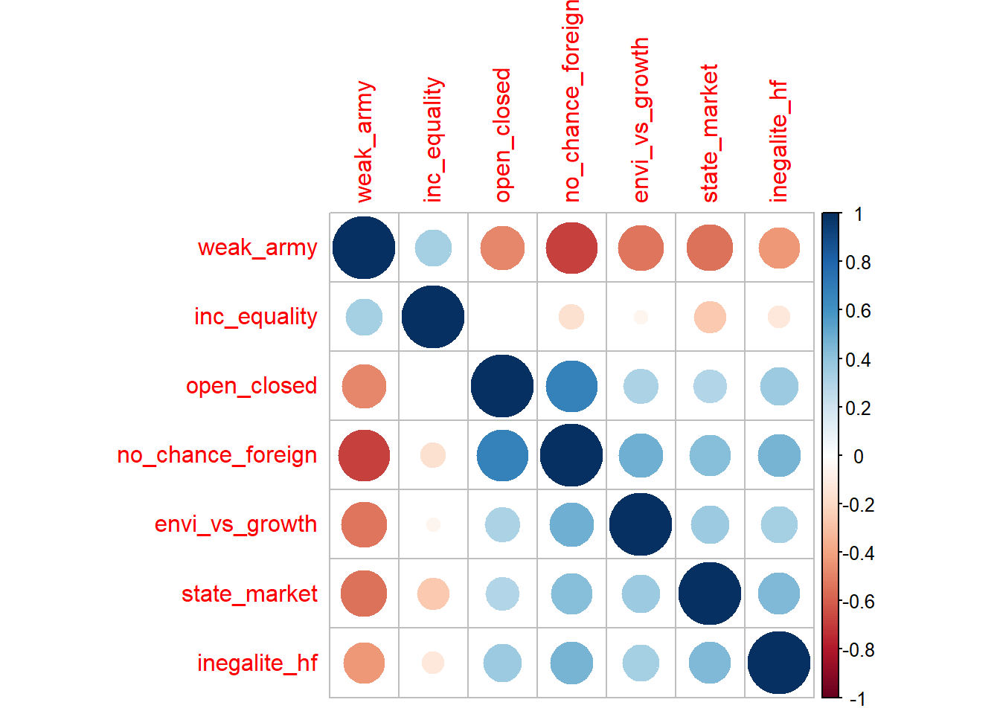
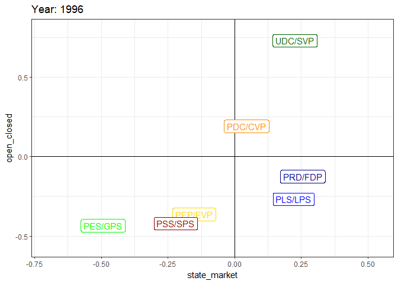
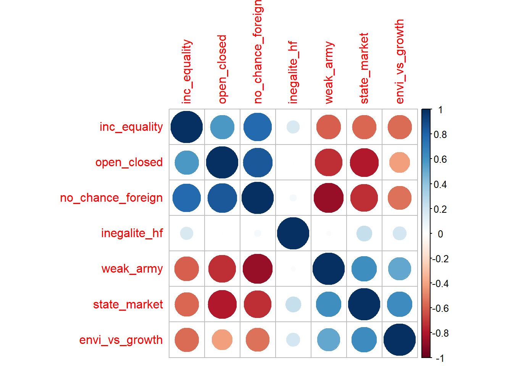

strdz <- function(x){
(x - mean(x, na.rm = TRUE))/(sd(x, na.rm = TRUE))
} # create a function which transfrom x into standardize variable by subtracting the mean and dividing by standard deviation
vox <-
vox %>%
group_by(annee) %>% # group by year
mutate(state_market = strdz(val11), # compute the standardization transformation and store into new variable
open_closed = strdz(val14),
envi_vs_growth = strdz(val10),
inegalite_hf = strdz(val16),
weak_army = strdz(val3),
inc_equality = strdz(val5),
no_chance_foreign = strdz(val9)) %>%
ungroup()
#### create a table: each row (observation) is a political party repeated for each year in which data were available (1996 to 2016)
values <-
vox %>%
group_by(annee, as_character(p02)) %>% # average computed across both year and parties
summarise(state_market = mean(state_market, na.rm = TRUE), # compute the average of standardized state vs market variable in each year for each party support group.
open_closed = mean(open_closed, na.rm = TRUE),
envi_vs_growth = mean(envi_vs_growth, na.rm = TRUE),
inegalite_hf = mean(inegalite_hf, na.rm = TRUE),
weak_army = mean(weak_army, na.rm = TRUE),
inc_equality = mean(inc_equality, na.rm = TRUE),
no_chance_foreign = mean(no_chance_foreign, na.rm = TRUE)) %>%
ungroup() %>%
drop_na() %>%
rename("party" = `as_character(p02)`)Intro
People who get lost or waste their time on the internet have surely seen the now famous “political compass” graphs, which have become a popular meme on the web. The irony and paradox of political compass, and that is what makes the latter intriguing, are that it is actually an important visualization in political science. Very shortly, a political compass is a mapping of political leaning and preferences based on two axes: (1) an economic axis representing the position of an individual, party, association or group on global economic issues (pro and anti redistribution, for economic planning or free market…) and (2) a “cultural” or “post-material” (a lot of different names are given to this axis) axis representing position on cultural issues, such as: “in favor or against immigration”, “in favor or against gay marriage/lgbt rights/traditional values…”
Whereas most people who use political compass do so to make memes and amuse their friends, political scientists are still seriously attached to their favorite toy and one often sees such mapping in political science articles. For instance, Oesch and Rennwald provide such graphics to map individuals political preferences for Switzerland and other countries using European Social Survey data (Oesch and Rennwald 2018, 795). Pascal Sciarini, in a manual on Swiss politics, also provides such a graph using Swiss Elections Studies data (Sciarini 2023, 341). The idea that political preferences can be separated between an economic and cultural cleavage comes back at least to Inglehart (1971) who explained the emerging salience of cultural issues over the traditional economic divide as a consequence of post-war tremendous economic growth which made the West so wealthy that people would get rid off of any material insecurity, hence shifting the focus on cultural matters rather than economic ones. But how do political scientists construct such graphs? The goal of this post is to explore how the economic and cultural axes are constructed, what are the data and variables used, and what kind of statistical manipulation is done with those data.
Constructing a Political Compass
Political compass is typically constructed from ordinal variables related to economic and cultural issues and the individual self-placement of survey respondents to these issues. For instance, Oesch and Rennwald (2018) construct the preferences of respondents on the economic axis from an ordinal 5-points scale variable about preferences on redistribution (1 = strongly agree to reduce differences in income levels, 5 = strongly disagree). For the cultural cleavage, they took three variables: (1) the impact of immigrants on cultural life, (2) European integration and (3) freedom of gay people. One can directly see the problem with the construction of such a “cultural” axis: are here the European integration and immigration issues purely cultural issues? In my opinion, European integration cannot be considered only as a cultural “openness vs closeness values” issue and should not have been included to construct the cultural axis. However, the next step after choosing the variables is to standardize them: each observed value of the dataset is subtracted by the mean of the variable and divided by its standard deviation. If more than one variable are taken into account, the variables are standardized and the average values on these three standardized variables are computed to create the final index.
Example and Variables
To work with an example, I will work here with a dataset which is not used by the literature cited above: the Voxit studies. The latter offer a cumulative dataset on Swiss referendum voting from 1981 to 2016. The dataset contains a list of “issue positions” variables:
- In favor of state intervention or free markets
- In favor of or against income equality
- In favor of an open or closed Switzerland
- In favor of active equality policy between men and women
- In favor of equal chances between Swiss people and foreigners
- In favor of environnment protection or economic growth
- In favor of a strong or weak Swiss army
All these variables are ordinal on a 7-points scale. Another variable, “p02” collected political party support (which party the respondent feels the most closed to). I will use this variable as a group to plot Swiss political parties on the economic and cultural axes depending on the average value of their supporters on the standardized economic and cultural issues variables.
Constructing the axes
To construct the economic axis, I will use the “state vs market” variable. “Open vs closed Switzerland” will be used for the cultural axis.
Here are all the steps to transform the variable, compute the average values for each year for each political party support and how to plot the final political compass.
Before plotting the political compass, it could be interesting to see the correlation between the average values through the years. If two variables are positively correlated, that means there are chances that, given any year, when one has high value (average of the standardized issue position variable for each respondent having declared to support the Swiss’s People party for instance) the other will have a high value as well:
values %>%
dplyr::select(-annee, -party) %>%
cor() %>%
corrplot(order = "hclust")
The correlation plots give coherent results overall. For example, the average of party supporters who declared not being in favor of equal chance for foreigners are also supportive of a isolated Switzerland (see “no_chance-foreign” - “open_closed”).
Plotting the Graph
Let’s now plot a political compass for a given year. I choose the first year available: 1996. I also filter political parties to select only the most important ones: the Swiss Social Democratic Party (PSS/SPS), the Radicals (PRD), The Swiss Peoples Party (UDC/SVP), the Liberals, The Catholic-Conservatives (PDC), the Greens (PES/GPS), the Evangelical party (PEP/EVP).
values %>%
filter(annee %in% c(1996) & party %in% c("UDC/SVP", "PDC/CVP", "PLS/LPS", "PSS/SPS", "PRD/FDP", "PES/GPS", "PEP/EVP")) %>%
ggplot()+
aes(x = state_market, y = open_closed, label = party, color = party)+
geom_hline(yintercept = 0)+
geom_vline(xintercept = 0)+
geom_label()+
labs(x = "State intervention - Free market",
y = "Open vs Closed Switzerland",
title = "Swiss Political Compass",
subtitle = "1996",
caption = "Data source: Voxit")+
xlim(-1,1)+
ylim(-1,1)+
theme(legend.position = "none")+
scale_color_manual(values = c("PSS/SPS" = "darkred", "PES/GPS" = "green", "UDC/SVP" = "darkgreen", "PEP/EVP" = "gold", "PLS/LPS" = "blue",
"PLR" = "darkblue", "PDC/CVP" = "darkorange", "PRD/FDP" = "darkblue"))
Switzerland’s political space is often considered as constituted by three political blocs. The first plot above shows that it was indeed the case in 1996 if we look only at the main parties. The greens and social-democratic supporters are for an open Switzerland and rather for state intervention. Piketty (2019) would call this bloc “Social-egalitarian” because social economically and egalitarian in terms of cultural/openess values. A second bloc is constituted by free-market and open Switzerland Swiss citizen, who support the Radical-Democratic party (PRD/FDP) and the Liberal party (PLS/PRD). Note that these two parties, constituting a “Social-inegalitarian bloc” (Piketty 2019), merged in 2009 and gave birth to the Liberal-Radical party (PLR). The graph above shows that base the two parties was indeed very close. Third and finally, what Piketty calls negatively the “Social-nativist trap” is represented here on the upper-right cadran. However, the graph clearly shows that the SVP cannot be considered as “social-nativist” because its supporters are on average clearly in favor of pro-market policies. The party is thus more “nativist-inegalitarian” than “social-nativist”. Social-nativism is not represented in Switzerland: there is no political support for any party which is on the left economically and on the right in terms of cultural values (empty upper-left cadran).
Time Comparisons
Next, let’s take advantage of what can be done with such data and visualization. It would be interesting to compare 1996 with 2016 (the last year of the dataset) to see the evolution: is the tripolar political space described above stable?
values %>%
filter(annee %in% c(1996, 2016) & party %in% c("UDC/SVP", "PDC/CVP", "PLS/LPS", "PSS/SPS", "PRD/FDP", "PES/GPS", "PEP/EVP", "PLR")) %>%
ggplot()+
aes(x = state_market, y = open_closed, label = party, color = party, group = party)+
geom_hline(yintercept = 0)+
geom_vline(xintercept = 0)+
geom_label()+
geom_line(arrow = arrow(length=unit(0.30,"cm"), type = "closed"))+
labs(x = "State intervention - Free market",
y = "Open vs Closed Switzerland",
title = "Swiss Political Compass",
subtitle = "1996-2016",
caption = "Data source: Voxit")+
theme(legend.position = "none")+
scale_color_manual(values = c("PSS/SPS" = "darkred", "PES/GPS" = "green", "UDC/SVP" = "darkgreen", "PEP/EVP" = "gold", "PLS/LPS" = "blue",
"PLR" = "darkblue", "PDC/CVP" = "darkorange", "PRD/FDP" = "darkblue"))
We can see that there is no great change overall: Switzerland’s tripolar division is still valid in 2016. The greens supporters haven’t really change their position. PSS supporter have become more right-wing economically. The PEP supporters have totally changed their position in terms of cultural values. The PLS and PRD have merged to create the PLR and the SVP supporters have become slighlty more right-wing economically.
Making a Video
However, a great deal of information is hidden behind this graph. In effect, we also want to know the transition every year. This would allow to check whether the tripolar division was stable or not. To do so, we have few choices but to create an animated graph that would display the graphs every year from 1996 to 2016. Fortunaly, the package gganimate allows to rather easily make such animations in R. In my case, I will simply add the function transition_time():
anim <-
values %>%
filter(party %in% c("UDC/SVP", "PDC/CVP", "PLS/LPS", "PSS/SPS", "PRD/FDP", "PES/GPS", "PEP/EVP", "PLR")) %>%
ggplot()+
aes(x = state_market, y = open_closed, label = party, color = party)+
geom_hline(yintercept = 0)+
geom_vline(xintercept = 0)+
geom_label()+
theme(legend.position = "none")+
scale_color_manual(values = c("PSS/SPS" = "darkred", "PES/GPS" = "green", "UDC/SVP" = "darkgreen", "PEP/EVP" = "gold", "PLS/LPS" = "blue",
"PLR" = "darkblue", "PDC/CVP" = "darkorange", "PRD/FDP" = "darkblue"))+
transition_time(time = round(annee))+
labs(title = 'Year: {frame_time}')+
ease_aes('linear', interval = 1)Then use animate() to improve the fps, add a pause at the end and slow down the animation
animate(anim, duration = 30, fps = 30, end_pause = 50)
Since gganimate provides gifs, which are sometimes not really convenient (if we want to pause the animation for example). Here is thus the same animation in video format:
Replacing party support by income group
What if we average variables across income group instead of party support? We would then see how each income group situates on average on the economic and cultural axes. Have the lowest income groups become more conservative in terms of cultural values? How do the rich situate on the graph? Those are all interesting questions that can be answered by repeating the same steps above, but changing the group (part ==> income group).
The income variable that I will use is a variable I created from two income variables of the dataset (look here if you want to see the details). The income variable has four groups.
vox$income_f <- factor(vox$income, levels = c(-1, 0, 1, 2), labels = c("low", "lower middle", "upper middle", "high"))
values_inc <-
vox %>%
group_by(annee, income_f) %>% # average computed across both year and parties
summarise(state_market = mean(state_market, na.rm = TRUE), # compute the average of standardized state vs market variable in each year for each party support group.
open_closed = mean(open_closed, na.rm = TRUE),
envi_vs_growth = mean(envi_vs_growth, na.rm = TRUE),
inegalite_hf = mean(inegalite_hf, na.rm = TRUE),
weak_army = mean(weak_army, na.rm = TRUE),
inc_equality = mean(inc_equality, na.rm = TRUE),
no_chance_foreign = mean(no_chance_foreign, na.rm = TRUE)) %>%
ungroup() %>%
drop_na() %>%
rename("income_group" = income_f)values_inc %>%
dplyr::select(-annee, -income_group) %>%
cor() %>%
corrplot(order = "hclust")
values_inc %>%
filter(annee %in% c(1996, 2016)) %>%
ggplot()+
aes(x = state_market, y = open_closed, label = income_group, fill = income_group, group = income_group)+
geom_hline(yintercept = 0)+
geom_vline(xintercept = 0)+
geom_label()+
geom_line(arrow = arrow(length=unit(0.30,"cm"), type = "closed"))+
labs(x = "State intervention - Free market",
y = "Open vs Closed Switzerland",
title = "Swiss Political Compass",
subtitle = "Average by income group, 1996",
caption = "Data source: Voxit")+
theme(legend.position = "none")+
scale_fill_brewer(palette = "Set1")
anim2 <-
values_inc %>%
ggplot()+
aes(x = state_market, y = open_closed, label = income_group, fill = income_group)+
geom_hline(yintercept = 0)+
geom_vline(xintercept = 0)+
geom_label()+
theme(legend.position = "none")+
scale_fill_brewer(palette = "Set1")+
transition_time(time = annee)+
labs(title = 'Year: {frame_time}',
x = "State intervention - Free market",
y = "Open vs Closed Switzerland",
subtitle = "Average by income group, 1996-2016",
caption = "Data source: Voxit")
animate(anim2, duration = 30, fps = 30, end_pause = 50)References
Inglehart, Ronald. 1971. “The Silent Revolution in Europe: Intergenerational Change in Post-Industrial Societies.” American Political Science Review 65 (4): 991–1017. https://doi.org/10.2307/1953494.
Oesch, Daniel, and Line Rennwald. 2018. “Electoral Competition in Europe’s New Tripolar Political Space: Class Voting for the Left, Centre-Right and Radical Right.” European Journal of Political Research 57 (4): 783–807. https://doi.org/10.1111/1475-6765.12259.
Piketty, Thomas. 2019. Capital Et Idéologie. Le Seuil.
Sciarini, Pascal. 2023. Politique Suisse - Institutions, Acteurs, Processus. Lausanne: Presses polytechniques et universitaires romandes. https://www.epflpress.org/produit/1421/9782889155279/politique-suisse.